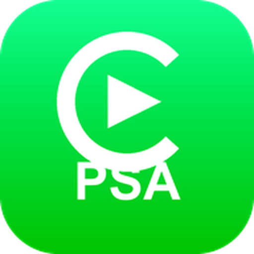

PSA PlayBased on upstream DiPlay v0.2.17 · independent community buildВаш iPhone.
Як удома у вашому авто.
Карти, музика й розмови на екрані автомобіля. PeugeotPlay додає дротовий і бездротовий CarPlay на сумісні головні пристрої Android зі звичним інтерфейсом DiAuto.
Без джейлбрейка, адаптера, облікового запису й сервера автентифікації.
Установлюйте на головний пристрій, а не на iPhone. Android 7.1+ (API 25); підтримка 7.1–8.1 нова й ще потребує перевірки в автомобілі. Доступні USB та бездротове з’єднання через точку доступу автомобіля, Wi-Fi Direct або наявну мережу Wi-Fi. Сумісність залежить від пристрою, прошивки й iOS.
Field-tested on a 2025 BYD Han DM-i with DiLink 5.0. Other models and head-unit systems are not guaranteed; test on your own car or adapt the source.
Звична поїздка


Встановлення в автомобілі
- На стоянці завантажте APK і встановіть його способом, який підтримує ваш головний пристрій.
- Відкрийте PeugeotPlay і надайте запитані дозволи на Bluetooth, Wi-Fi/геопозицію й мікрофон.
- Увімкніть вбудовану точку доступу автомобіля (5 ГГц, якщо є). У Налаштування → Підключення → Відкрити налаштування підключення виберіть «Вбудована точка доступу автомобіля» й збережіть її точну назву та пароль. Тримайте Wi-Fi і Bluetooth на телефоні увімкненими, сполучіть телефон з автомобілем, потім натисніть «Підключити телефон» і підтвердьте запити на телефоні.
- Для дротового підключення під’єднайте USB-кабель для передавання даних і виберіть «Підключити через USB». Підтвердьте запити USB, «Довіряти» або локальної VPN.
Для щоденного користування ADB не потрібен. Способи встановлення APK залежать від автомобіля. Вводити MAC-адресу вручну не потрібно.
Довідка зі встановлення й підключення ↗Нове у 0.2.17
- Дротовий сеанс триває, коли пристрій отримує пошкоджений блок мережевих даних USB, замість перепідключення за кілька секунд після появи зображення. Старі iPhone отримують другу спробу ідентифікації, а автопідтвердження USB розпізнає запит дозволу на Android 10+ і китайською.
- Новий вибір «Заряджання iPhone» у Налаштування → Підключення → USB-підключення допомагає, якщо USB-порт автомобіля не видає струм заряджання, потрібний iPhone.
- Голосові повідомлення в застосунках на кшталт WhatsApp записуються мікрофоном головного пристрою і більше не звучать змазано.
- Налаштування рекомендують вбудовану точку доступу автомобіля. Зі схваленим мережевим ADB пошук мереж Wi-Fi в автомобілі призупиняється під час Wi-Fi Direct на Android 7.1 і новіших.
- PeugeotPlay раз на день перевіряє оновлення й показує «Доступне оновлення» на головному екрані. Перевірку можна вимкнути в розділі «Про застосунок».
- Атмосферне підсвічування може стежити за обкладинкою альбому. Експериментальні приховування спливного вікна дзвінків BYD і клавіші зовнішнього контролера вимкнені типово; перевіряйте додаткові функції на стоянці.
Added in PSA Play
- Custom dashboard turn card: 1% placement sliders, size and opacity, day/night glass, trip info strip; kept across drops, cleared at the destination.
- Client network mode: the head unit joins the phone hotspot or home LAN, so the iPhone and the car share one network.
- In-app update checks on GitHub.
- Optional delayed pause of the car Bluetooth during CarPlay; boot auto-start ADB repair; open the app when the selected iPhone reconnects.
- Simplified Chinese fallback on unsupported head-unit languages; stable signing key so updates overlay-install and keep settings.
Перш ніж спробувати
Це відкрита попередня версія, а не продукт, сертифікований Apple. Автентифікація використовує експериментальну ідентичність аксесуара, відновлену з публічної прошивки; що вона працюватиме й надалі, не гарантовано. На деяких головних пристроях досі бувають ривки або не діє зміна розміру значків. Почніть із 30 кадрів/с і вимкненим HEVC; за потреби спробуйте нижчу роздільність.
Новини про випуски
Новини й нові збірки в Telegram.
Оновлення й підпис
Встановлюйте поверх попереднього публічного випуску, щоб зберегти налаштування; публічний ключ підпису не змінився. Тестові збірки використовують окремий пакет застосунку.
PSA Play APKs are signed with one stable key: install over the previous build to keep settings. About → Check for updates downloads and installs the next build in place (first use asks once for the install-unknown-apps permission).
Потрібні свіжі звіти з 0.2.17
1. Оновіться до 0.2.17, відтворіть проблему й запишіть час збою. 2. Налаштування → Діагностика → Зберегти діагностичний звіт. Android 10+ зазвичай зберігає в Downloads/PSA Play; Android 7.1–9 запитує доступ до сховища й зберігає туди ж. Якщо сховище або вибір файлу недоступні, дотримуйтеся підтвердження резервного збереження й використовуйте Перегляд/Поділитися. 3. Перевірте TXT, вилучіть паролі й приватні дані. Автоматичного надсилання немає. 4. Додайте до своєї проблеми: https://github.com/leonz973/PeugeotPlay-CN/issues Або створіть нову: https://github.com/leonz973/PeugeotPlay-CN/issues/new/choose Укажіть модель авто/пристрою, DiLink/Android/прошивку, iPhone/iOS, тип підключення, спосіб автентифікації (Local або USB/CH341), налаштування, кроки, очікуваний/фактичний результат і час збою.
Повідомити про проблему ↗ · Створити нову проблему ↗